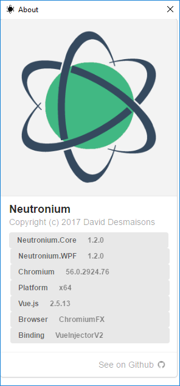

Builds
32 and 64 bits builds are supported
Since version 1.2.0. it is possible to use 64 build version of ChromiumFx.
If you build a neutronium project for x64 platform, the 64 bits build version of CEF will be used.
AnyCPU builds use 64 bits build version of CEF.
Checking version using about Window:
Check platform information in the about window:

Gotchas:
- Make sure that all the projects of the solution have the same platform value. Supported values:
x86,x64orAny CPU. - Make sure that the flag
Prefer 32-bitof the project (Properties>Build) is set to false.